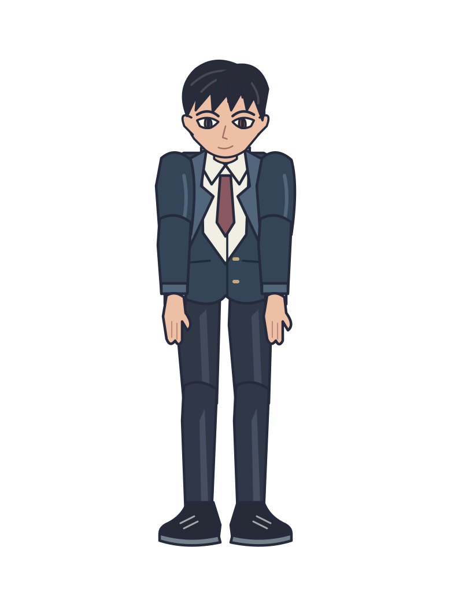

A LITTLE ART. A LOT OF POSSIBILITIES.
Bring characters to life.
An experiment in illustrated motion. Built with paths, bones, and a little personality.
LIVE PLAYGROUND60 FPS · VECTOR
01 / REN
The quiet observer
Y ↑
└── X
└── X
ORIGINAL CHARACTER / IDLE
0.00 s4.00 s
Live SVG rendering Illustrated in layers. Animated with intention.
FROM ART TO ACTION
Every path has a process.
Real Potrace tracing. Individually illustrated layers. A reusable skeletal rig.
01
→Illustrate
Original layered artwork
02
→Trace
PNG masks → Potrace paths
03
→Rig
Parented joints & pivots
04
Animate
Authored curves & leg IK
Inspect the source & traced silhouette ↗

The animated character uses individually traced layers, with original colors restored. The complete trace is a comparison artifact; anatomy is authored manually.